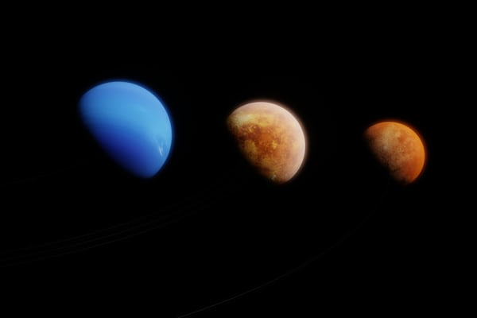
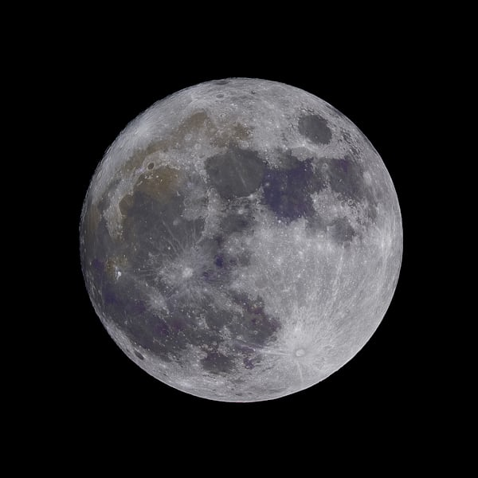
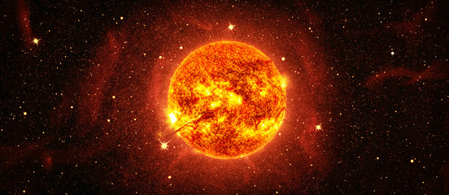

Explore our Sun, planets, moons, and other celestial objects in the Solar System.
The Solar System is made up of the Sun and all the objects that orbit it, including planets, moons, asteroids, and comets. Each planet has unique features, and together they form a fascinating cosmic neighborhood.



The eight planets are divided into inner rocky planets (Mercury, Venus, Earth, Mars) and outer gas giants (Jupiter, Saturn, Uranus, Neptune). Each has its own atmosphere, surface conditions, and interesting moons.
Beyond the planets, the Solar System contains asteroids, comets, and the Kuiper Belt. These smaller objects are remnants from the formation of the Solar System and can tell us a lot about its history.